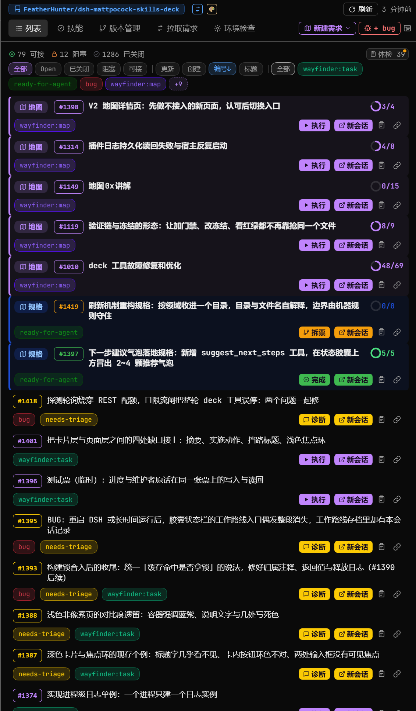
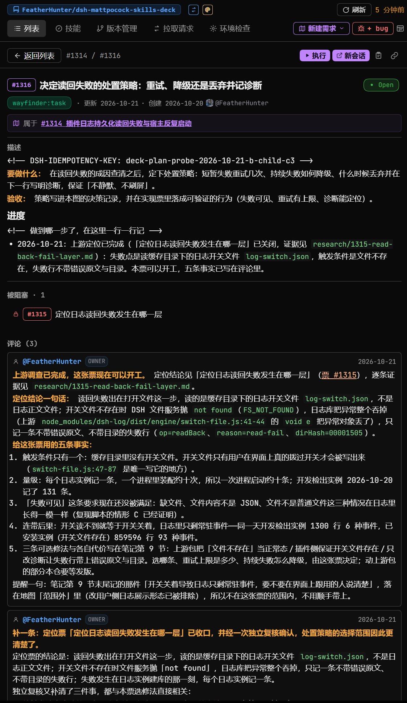
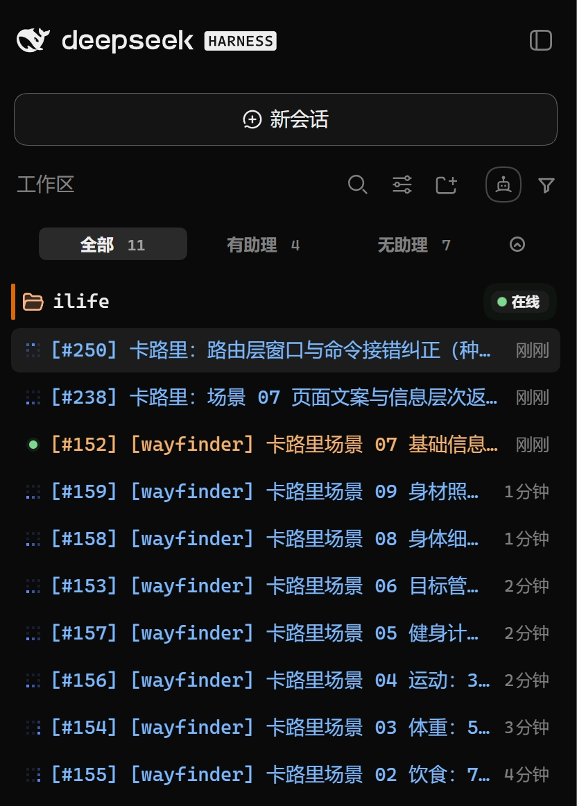
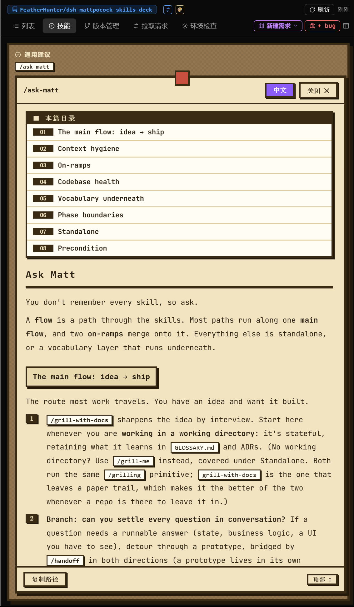
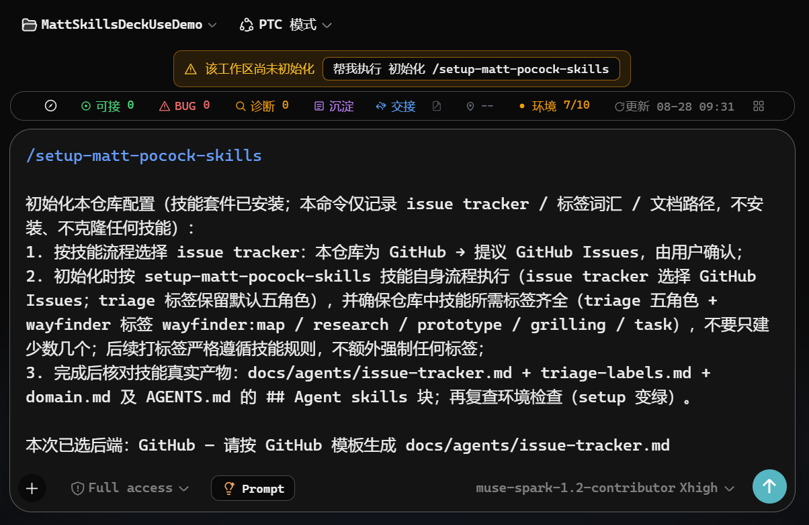

最终推荐·8张定稿（替换后）
相对 V1 的变化：5号换成“多ISSUE并发”，7号换成“技能页详情”；仍保持8张。顶部横滑条=市场详情页观感，首图即卡片封面。确认后我改 screenshots.json。

1 封面·列表总览 2 Map详情·决策
2 Map详情·决策
3 ISSUE详情·执行 4 技能页列表·库存
4 技能页列表·库存
5 多ISSUE并发·规模（已替换原胶囊输入框） 6 WorkRoute·活证明
6 WorkRoute·活证明
7 技能页详情·深度（已替换原切换后端）
8 注入prompt·上手1 封面·列表总览 看原图assets/readme/中文-深色-右侧面板-列表-列表.png
2 Map详情·决策 看原图assets/readme/中文-深色-右侧面板-列表-Map详情.png
3 ISSUE详情·执行 看原图assets/readme/中文-深色-右侧面板-列表-ISSUE详情.png
4 技能页列表·库存 看原图assets/readme/中文-深色-右侧面板-技能页面-列表.png
5 多ISSUE并发·规模（已替换原胶囊输入框） 看原图assets/readme/中文-深色-工作区-多ISSUE并发.png
6 WorkRoute·活证明 看原图assets/readme/中文-深色-胶囊状态栏-WorkRoute.png
7 技能页详情·深度（已替换原切换后端） 看原图assets/readme/中文-深色-右侧面板-技能页面-详情.png
8 注入prompt·上手 看原图assets/init/中文-深色-4-点击确认后-注入prompt.png